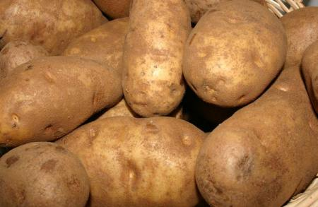
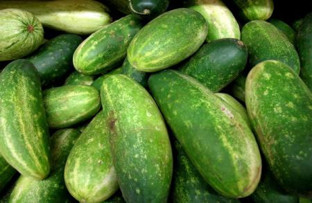
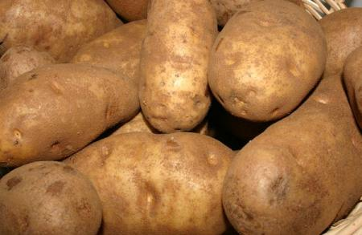
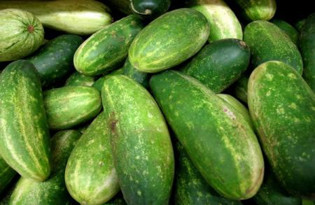

Артишок (лат. Cynara) — многолетнее травянистое растение семейства Астровые. По форме напоминающее зеленую шишку, пришло к нам из Италии, родиной принято считать Сицилию. Правда, ученые установили, что на самом деле растение было известно еще в Древней Греции, Риме и Египте; люди начали культивировать его более чем пять тысяч лет назад. Артишок — овощ неприхотливый, и может расти в любых широтах и климатических условиях.

 




 x
x